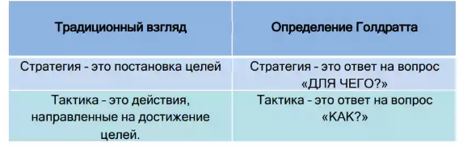

стратегия (strategy) - Ответ на вопрос: "Зачем?"; цель тактики. Стратегия любого предлагаемого изменения — это просто цель этого предлагаемого изменения в дереве стратегии и тактики.
См.:дерево стратегии и тактики, тактика.
#дст
Примечание АП: на верхнем узле - почему необходимы изменения - вопрос не про стратегию
Разница в подходах (Виктор Вальчук):

Примечание АВ: http://www.deming.ru/TehnUpr/PostrDerStrTak.htm#PromItog
Синоним: strategy